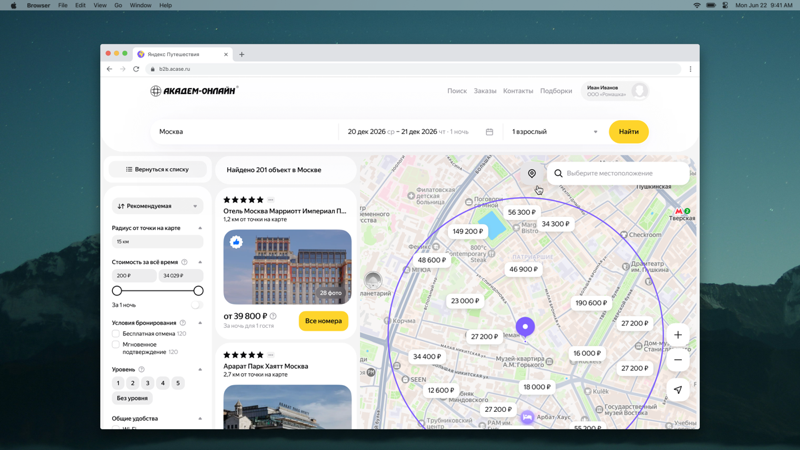
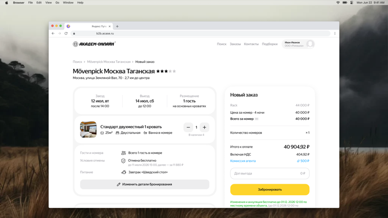
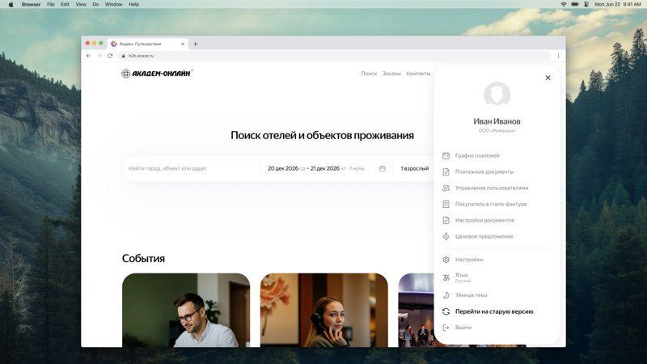

Обновили интерфейс сервиса
Мы обновили интерфейс сервиса, чтобы искать, сравнивать и бронировать объекты стало проще. Появились поиск на карте, подборки для согласования, более удобное оформление бронирований и обновлённый раздел с заказами. При этом цены на проживание остались прежними.

Новая страница выдачи
Теперь результаты поиска можно смотреть в двух режимах: на карте или списком. Карта поможет найти объект рядом с нужным местом — например, офисом или адресом встречи. Список подойдёт, если вы ищете конкретный объект и хотите подробно сравнить доступные предложения и цены.
Фильтры находятся слева — с ними проще подобрать объекты по нужным параметрам. Понравившиеся предложения можно сохранить в подборку, чтобы вернуться к ним позже или отправить на согласование.
Собирайте подборки для согласования
Нажмите на сердечко рядом с предложением, чтобы сохранить его. Выбранные варианты появятся в разделе «Подборки» в верхнем меню — там можно сравнить предложения и настроить их перед отправкой.
Добавьте скидку или наценку, она применится ко всем предложениям. Готовую подборку можно сразу отправить на согласование по электронной почте или в мессенджере.

Настраивайте бронирование под поездку
Добавляйте несколько номеров и распределяйте между ними гостей — их количество отображается в карточке каждого номера. Там же можно выбрать дополнительные услуги: ранний заезд, поздний выезд или питание.
Мы также обновили блок с ценой. Теперь в нём видно, из чего складывается стоимость заказа, поэтому перед бронированием проще проверить все детали.
Находите нужные заказы быстрее
Ищите заказы по номеру заказа или услуги, автору, статусу и датам проживания. Информация о каждом заказе стала понятнее, а основные действия — доступнее.
Теперь заказы проще дублировать, редактировать и удалять. Также можно добавлять новые и дублировать услуги в уже созданный заказ.

Старая версия остаётся доступной
Если вам привычнее работать в старом интерфейсе, вернуться к нему можно в любой момент. Для этого откройте меню профиля в шапке сайта, нажав на своё имя. Старая версия будет доступна до начала 2027 года.
Нам важно узнать, насколько удобным оказался новый интерфейс. Поделитесь впечатлениями и предложениями — напишите нам на адрес электронной почты.